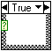

A Case structure, shown as follows, has two or more subdiagrams. Refer to the Case Structure - Selector Data Types VI in the labview\examples\Structures directory for an example of using Case structures.

Only one case subdiagram is visible at a time, and the structure executes only one subdiagram at a time. An input value determines which subdiagram executes. The Case structure is similar to switch statements or if...then...else statements in text-based programming languages.
The case selector label at the top of the Case structure, shown as follows, contains the name of the selector value that corresponds to the case in the center and decrement and increment arrows on each side.